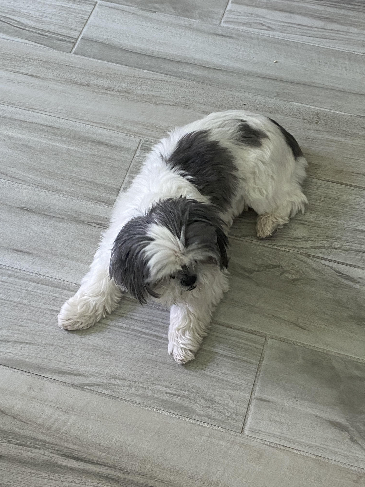
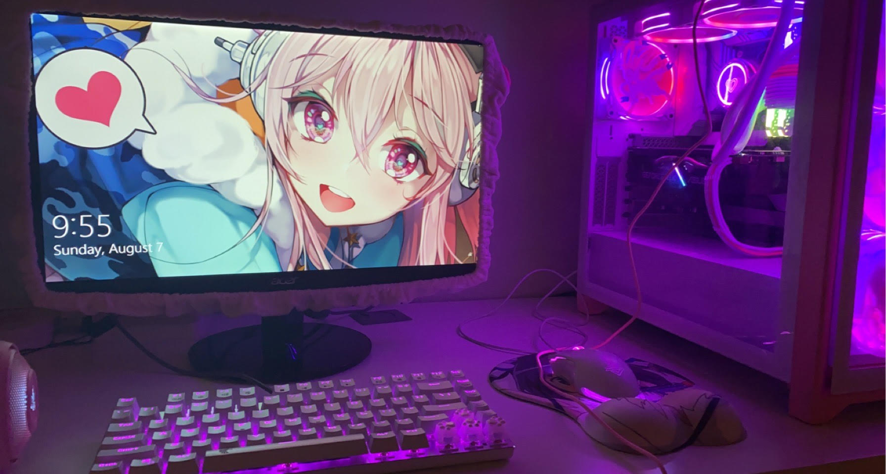

What else would you like to know?
My Home Life
My family currently lives in Tampa, Florida. My high school was Academy of the Holy Names which is a Catholic all-girls school. My highschool experience was definitely interesting, but I think it definitely prepared me for college. I used to live in South Florida, about an hour away from Miami. I loved living near Miami as a lot of my mom's family was there and there was always so much to do, but I also have found very good friends and opportunities in Tampa. I also have a dog named Sasha!
My Academic Interests
I'm currently a sophomore in college at NYU in the Liberal Studies program. I'm hoping to tranfer to CAS to pursue a computer science degree. I chose to do computer science because I feel like I can mix my passion for art into it and create things that I can see others use! I'm hoping that I can use my computer science knowledge to make a game or website about something I love one day. I built a PC myself and am hoping to be able to code cool projects on it.
